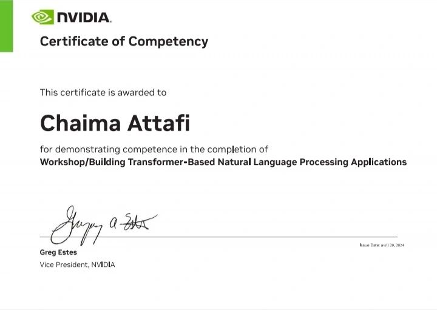
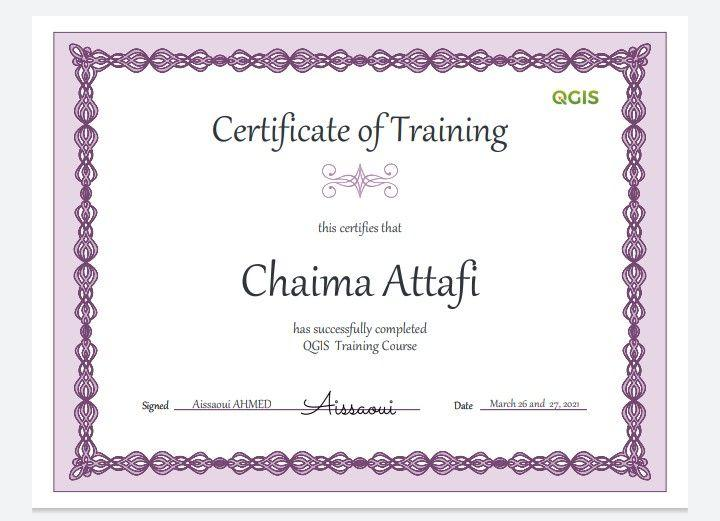

Natural Language Processing (NLP) certification program with Nvidia. Through this program, I learned advanced NLP techniques like text processing and language generation. I want to thank Nvidia for the opportunity and my instructors for their support. With this certification, I'm eager to apply my skills in areas like virtual assistants and sentiment analysis.
- Representation Learning
- Core NLP techniques and algorithms
- Text preprocessing and feature engineering
- Sentiment analysis and opinion mining
- Named entity recognition and entity linking
- Machine translation and language generation
- Deep learning for NLP
- Representation Learning
Instructor-led Training: The program was conducted by Professor Aissaoui Ahmed, a seasoned expert in geospatial technology, ensuring high-quality instruction and hands-on learning experiences.- Comprehensive Curriculum: The training covered essential concepts of QGIS, including data acquisition, manipulation, analysis, and cartographic visualization.
- Practical Applications:Through practical exercises and real-world examples, I gained practical skills in using QGIS to solve spatial problems and create informative maps.

I am proud to have completed a comprehensive training program in QGIS (Quantum Geographic Information System) under the guidance of Professor Aissaoui Ahmed. This certification represents my dedication to mastering geospatial data analysis and visualization techniques using industry-standard tools.
